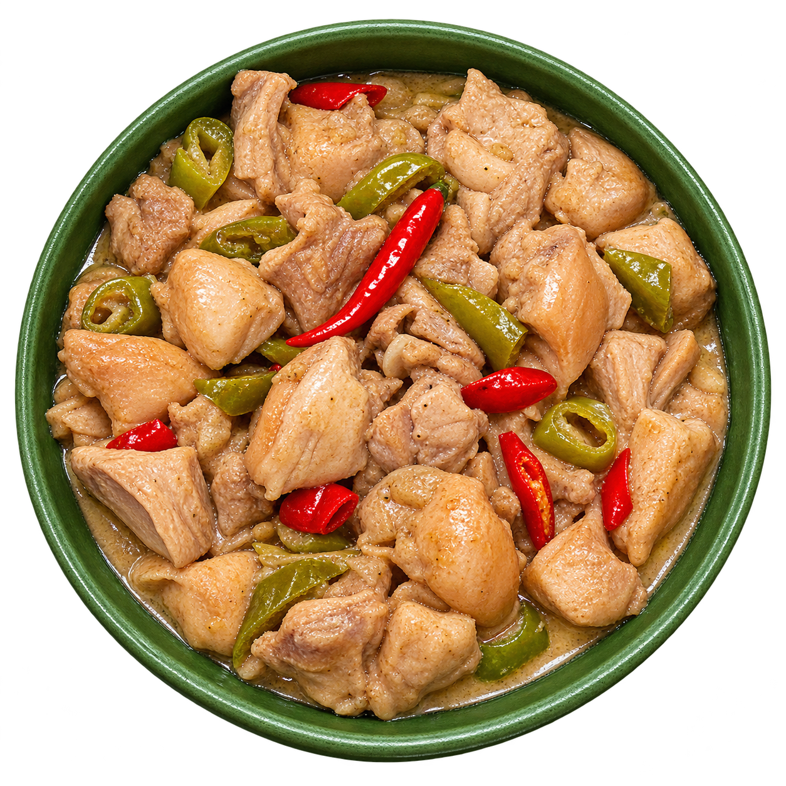
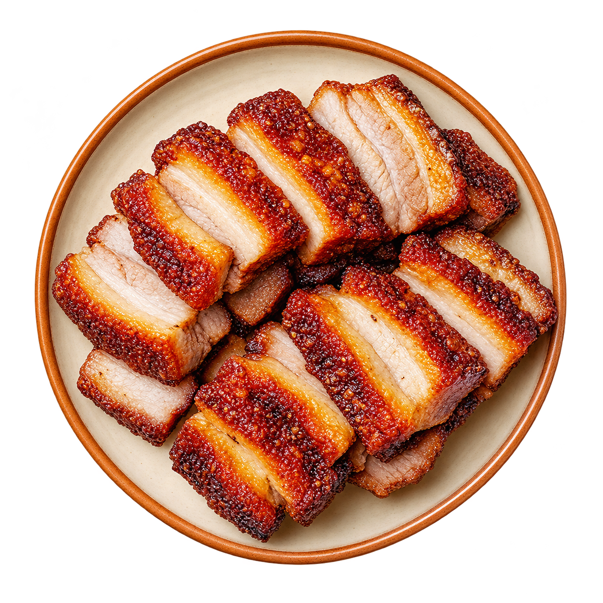
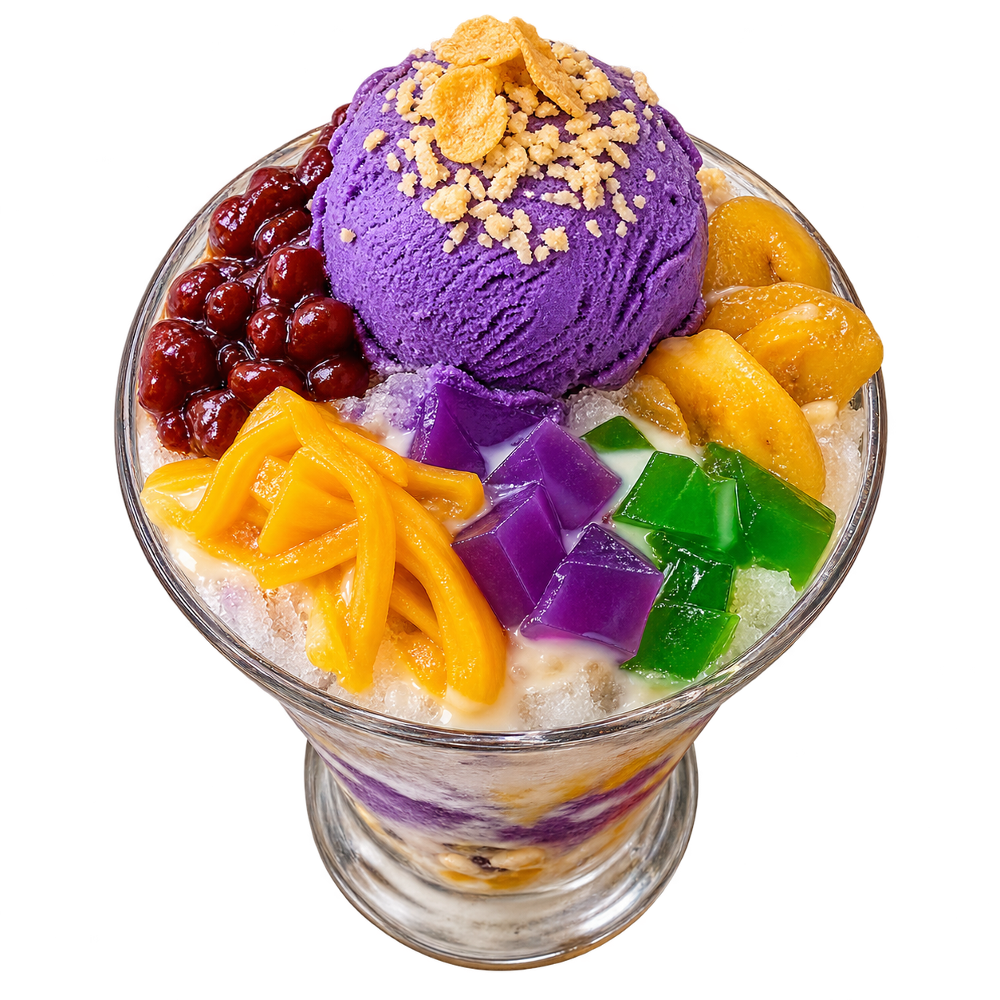

Cook Something Filipino.
Explore six Filipino recipe guides with source links and paraphrased steps, plus a featured Chicken Adobo recipe.
Browse the Recipe Collection
FEATURED RECIPE
Chicken Adobo
In the linked version, chicken is braised with soy sauce, vinegar, garlic, onion, and bay leaves, then served with pan-fried potatoes.
- PREP TIME
- 15 min
- COOK TIME
- 45 min
- MAKES
- 4 servings
Times and servings are listed in the linked recipe.
View Chicken Adobo at Kawaling PinoyExplore the Recipe Collection
Choose a recipe to jump to its ingredients and method, with a link to the source recipe.
- Sinigang na Baboy SOUP
- Bicol Express MAIN DISH
- Pancit Canton NOODLES
- Lechon Kawali MAIN DISH
- Turon DESSERT
- Halo-Halo DESSERT
Ingredients and Methods
The ingredient lists and methods below are paraphrased from the linked recipes. Their times and serving counts match those sources. Silangan has not independently tested these recipes.
-

SOUP
Sinigang na Baboy
Pork ribs simmer with tamarind and vegetables in this sour soup.
- TOTAL TIME
- 2 hours
- MAKES
- 4 servings
Recipe by Lalaine Manalo at Kawaling Pinoy.
View Sinigang na Baboy at Kawaling PinoyIngredients
- 2 pounds pork spare ribs, cut into pieces
- 8 cups water
- 2 large tomatoes, quartered
- 1 onion, peeled and quartered
- 2 tablespoons fish sauce
- 6 gabi, peeled and halved
- 1 radish, peeled and sliced
- 2 finger chilies
- 1/2 bunch long beans, trimmed and cut
- 1 large eggplant, sliced
- 6 okra, trimmed
- 15 large tamarind pods or 1 1/2 (1.41-ounce) packages tamarind base
- Salt and pepper, to taste
- 1 bunch bok choy or pechay
Method
- Put the ribs in a pot, cover with water, and bring to a boil. Skim the surface, then add tomatoes, onion, and fish sauce.
- Lower the heat and simmer until the pork is tender. Add water as needed to keep about 8 cups of broth.
- Add gabi first, then the chilies and radish, followed by long beans, eggplant, and okra. Cook each until just tender.
- If using tamarind base, stir it into the pot. For fresh pods, boil them in water until soft, mash, strain, and add the pulp to the soup.
- Season with salt and pepper. Add bok choy or pechay and cook briefly before serving.
-

MAIN DISH
Bicol Express
Pork simmers with coconut milk, shrimp paste, and chilies.
- TOTAL TIME
- 1 hour 10 minutes
- MAKES
- 6 servings
Recipe by Lalaine Manalo at Kawaling Pinoy.
View Bicol Express at Kawaling PinoyIngredients
- 1 tablespoon oil
- 1 onion, thinly sliced
- 4 cloves garlic, minced
- 2 pounds pork belly, cut into cubes
- 2 tablespoons fresh shrimp paste
- 1 can (13.5 ounces) coconut milk
- 1 cup water
- 14 Thai chilies, stemmed and minced
- 2 cups sliced finger chilies
- 1 cup coconut cream
- Salt and pepper, to taste
Method
- Warm the oil in a wide pot over medium heat. Soften the onion and garlic, then add the pork and brown it lightly.
- Stir in the shrimp paste and cook briefly. Pour in the coconut milk and water, then add the Thai chilies.
- Keep the mixture at a gentle simmer until the pork is tender and the liquid has reduced.
- Add the finger chilies and coconut cream. Simmer until the sauce thickens, then season with salt and pepper.
-

NOODLES
Pancit Canton
Wheat noodles are tossed with pork, chicken, shrimp, and vegetables.
- TOTAL TIME
- 50 minutes
- MAKES
- 6 servings
Recipe by Lalaine Manalo at Kawaling Pinoy.
View Pancit Canton at Kawaling PinoyIngredients
- Canola oil, for cooking
- 8 snow peas, trimmed
- 8 large shrimp, peeled and deveined
- 4 ounces fish balls, halved
- 6 ounces hamonado sausage or Chinese sausage, sliced
- 1 onion, chopped
- 2 cloves garlic, minced
- 1/4 pound pork butt, thinly sliced
- 1/4 pound boneless chicken, thinly sliced
- 1 large carrot, cut into thin strips
- 1/2 bunch kinchay, chopped
- 1 head napa cabbage, sliced
- 4 cups chicken broth
- 2 tablespoons oyster sauce
- 2 tablespoons soy sauce
- Salt and pepper, to taste
- 2 packages (8 ounces each) pancit canton noodles
Method
- Heat oil in a wok or wide pan. Cook the snow peas briefly and set aside. Cook the shrimp until pink, then set aside; brown the fish balls and sausage and remove them as well.
- Soften the onion and garlic in the pan. Add pork and chicken and cook until browned.
- Pour in the broth and bring it to a boil. Simmer until both meats are cooked through, then stir in the soy and oyster sauces. Season with salt and pepper.
- Add the carrot, kinchay, and cabbage and cook until tender-crisp. Add the noodles and toss gently until most of the broth is absorbed.
- Return the shrimp, fish balls, sausage, and snow peas to the pan. Toss until hot and the noodles are just tender.
-

MAIN DISH
Lechon Kawali
After simmering with garlic and spices, the pork is chilled uncovered overnight, then deep-fried.
- TOTAL TIME
- 10 hours 10 minutes, including cooling
- MAKES
- 8 servings
Recipe by Lalaine Manalo at Kawaling Pinoy.
View Lechon Kawali at Kawaling PinoyIngredients
- 4 pounds whole pork belly
- 1 head garlic, crushed
- 2 tablespoons salt
- 1 tablespoon peppercorns
- 2 bay leaves
- Water, to cover
- Vinegar, for brushing the skin (amount not specified)
- Canola oil, for deep-frying
Method
- Put the pork, garlic, salt, peppercorns, and bay leaves in a deep pot. Add water to cover, bring to a boil, then lower the heat and simmer until the meat is fork-tender.
- Drain the pork and let it cool. Pat it dry, score the skin without cutting into the meat, then brush the skin with vinegar and season the pork with salt.
- Set the pork skin-side up on a rack and refrigerate uncovered overnight. Scrape off the salt before frying.
- Heat enough oil to cover the pork to 350–375°F. Carefully lower in the dried pork and fry until golden and crisp. Drain on a rack, rest about 5 minutes, then cut into portions.
-

DESSERT
Turon
Saba banana and sweetened jackfruit are wrapped in spring-roll wrappers, coated with sugar, and fried.
- TOTAL TIME
- 30 minutes
- MAKES
- 24 pieces
Recipe by Lalaine Manalo at Kawaling Pinoy.
View Turon at Kawaling PinoyIngredients
- 12 saba bananas
- 1 cup sugar
- 24 spring roll wrappers
- 1/2 cup sweetened jackfruit, cut into strips
- Canola oil, for frying
Method
- Peel the bananas and cut each lengthwise into two halves. Heat about 1 inch of oil in a skillet.
- Place a wrapper on the work surface like a diamond. Roll a banana half in sugar and set it in the middle; add 2 or 3 jackfruit strips.
- Fold the bottom and sides over the filling, roll tightly, and seal the edge with a little water. Repeat with the remaining wrappers and filling.
- Coat the sealed rolls in sugar. Fry seam-side down, turning as needed, until golden and caramelized. Drain on a rack and serve.
-

DESSERT
Halo-Halo
Shaved ice is layered with sweetened mix-ins, milk, leche flan, and ice cream.
- TOTAL TIME
- 10 minutes
- MAKES
- 4 servings
Recipe by Lalaine Manalo at Kawaling Pinoy.
View Halo-Halo at Kawaling PinoyIngredients
- 1/2 cup gulaman cubes or sago
- 1/2 cup sweetened beans, such as garbanzo, red mung, or white beans
- 1/2 cup nata de coco, drained
- 1/2 cup kaong, drained
- 1/2 cup sweetened saba bananas
- 1/2 cup sweetened jackfruit strips
- 1/4 cup sweetened macapuno
- 1/2 cup ube halaya
- Shaved ice, as needed
- 1 cup evaporated milk
- 1 cup leche flan
- 4 scoops ice cream (mango, ube, or vanilla)
- Pinipig, optional garnish
Method
- Prepare the gulaman according to its package directions, using less water for firmer cubes.
- Spoon about a teaspoon of each chosen mix-in into tall glasses until each is about one-third full.
- Pack in shaved ice and drizzle with evaporated milk. Top with leche flan and a scoop of ice cream.
- Finish with macapuno and pinipig if desired. Serve immediately.
More Than a Recipe. A Taste of Home.
Filipino cooking is about sharing, tradition, and bringing people together. Keep exploring and discover the flavors worth passing on.
Discover Filipino Foods